Options/Preferences Window
This document explains all options available in the Options window of Firefox.
Contents
- Main Options
- Tabs Options
- Content Options
- Feeds Options
- Privacy Options
- Security Options
- Advanced Options
Main Options
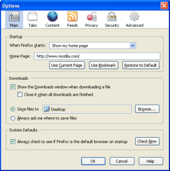- Startup
-
- When Firefox starts
-
Here you are able to specify the action that Firefox will take when you launch it. Choose
Show my home page
to make Firefox go to your home page, each time you launch Firefox. ChooseShow a blank page
to make Firefox show a blank page, each time you launch Firefox. ChooseShow my windows and tabs from last time
to make Firefox open the webpages you had open when you last closed Firefox. - Home Page
-
Here you are able to specify the page (or tab group) that Firefox will show when you press the Home button. Enter the address in the Location(s) field.
Click to use the page you're currently visiting. You can also use multiple home pages. If more than one browser tab is currently opened, this button will set the whole tab group as a start page.
To specify the home page(s) using a bookmark, click . You can even select a whole bookmark folder to be used!
If you want to restore the default home page, click .
- Downloads
-
Show the Downloads window when downloading a file
With this option selected, Firefox will open the Downloads window when you start downloading a file.
Close it when all downloads are finishedSelect this option to have Firefox close the Downloads window when all downloads currently in progress finish.
-
Save files to:
This is the default option. It allows you to specify a default folder where all downloads will be saved to, such as the
My Downloads
folder. You can select a different folder by clicking on the button, which will open the folder in the default file manager (e.g. Windows Explorer or Nautilus).Ask me where to save filesFirefox will ask you where you want a file to be saved when you download something.
- System Defaults
On Windows, you can check to see if Firefox as the default browser by clicking . This will ensure Firefox is used whenever an application is trying to display a web page or when you double-click a HTML file. This feature does not work in Linux or Macintosh.
Tabs Options
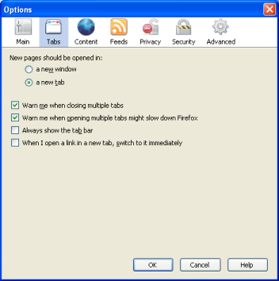Tabs Options Panel contains options related to the tabbed browsing feature.
- New pages should be opened in:
-
a new window
With this option selected, any web pages opened by web links or other applications will be displayed in a new window.
a new tabWith this option selected, any web pages opened by web links or other applications will be displayed in a new browser tab.
If you're trying to close a window with more than one tabs opened, Firefox will display a confirmation dialog before the window is closed, to prevent accidental dataloss.
If you accidentally try to open a large set of tabs, which may slow down performance, Firefox will display a confirmation dialog, giving you a chance stop it from opening so many pages at once.
If you're only viewing one Web page in a browser window, the tab bar is not shown. Check mark this option to show the tab bar all the time.
When you middle-click on Web links (or hold down Ctrl while clicking with the left mouse button), the links will be opened in a new tab. That tab will not be shown directly; it will be loaded in a background tab. Check this option to load the link in a foreground tab instead, which will show that tab directly.
Content Options
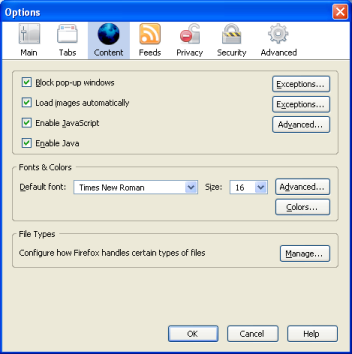By default, Firefox blocks annoying pop-up windows on web sites. Unchecking this option will disable pop-up blocking.
Some sites make legitimate use of pop-up windows. Therefore, the pop-up blocking feature has a simple whitelist mechanism to allow certain sites to open pop-ups anyway. To add a site to the whitelist, click and enter the address of the web site and click .
To remove a site from the whitelist, select that site from the list and then click . To clear the whitelist completely, click .
By default, images are loaded on web pages. Uncheck this option to disable images completely. If images are loaded, you can still specify not to load images from certain sites by clicking .
JavaScript is a scripting language commonly used to construct web pages. Programmers use JavaScript to make web pages more interactive; for example, to display forms and buttons. Disabling JavaScript may cause some sites not to work properly, including this one.
While it is usually recommended to keep JavaScript enabled, there are some functions that you may want to disable. Click the button to display these options.
- Allow scripts to:
-
Move or resize existing windows
Uncheck this option to disable moving and resizing windows using scripts.
Raise or lower windowsUncheck this option to make sure scripts cannot raise (bring to the front) or lower (send to the back) windows.
Disable or replace context menusUncheck this option to prevent web pages from disabling or changing the Firefox context menu.
Hide the status barCheck mark this option to allow scripts to hide the status bar in pop-up windows.
Change status bar textCheck mark this option to allow scripts to use status bar text scrolling and Web address hiding.
The options displayed here are certainly not all of them. You can also make sure all popup windows are resizable, minimizable, and that the menu and toolbar is always displayed. All of these options are available on the Tips & Tricks page.
- Fonts & Colors
-
Normally, web pages are displayed in the default font set by your browser or in a font chosen by the web pages' authors. Here, you can select the font and font size used when web pages don't specify one. For more advanced font options, click on , or for colors options, click on .
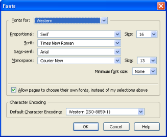- Fonts for:
-
You can actually set a specific default font for various types of fonts, and character sets.
To change the default fonts by font type and character set:
- From the
Fonts for
drop-down list, choose a character set. For instance, to set default fonts for the Western (Roman) character set, chooseWestern
. - Select whether proportional text should be serif (like "Times New Roman") or sans-serif (like "Arial"). Then specify the font size you want for proportional text.
- Specify the font to use for Serif, Sans-serif and Monospace fonts. You can also change the size for Monospace fonts.
Finally, you can set the minimum font size to be used on screen. This can be useful on some sites that use very small fonts that are barely readable.
- From the
- Allow pages to choose their own fonts, instead of my selections above
By default, Firefox uses the fonts specified by the Web page author. Uncheck this option to force all sites to be using your default fonts instead.
- Character Encoding
The character encoding selected here will be used to display pages that do not specify which encoding to use.
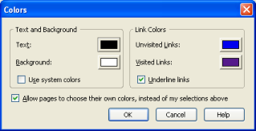- Text and Background
Here you can change the default text and background color to be used on Web pages that haven't specified that information. Click on the color samples to select colors.
Use system colorsCheck this option to use the colors defined in your OS settings instead of the colors specified above.
- Link Colors
Here you can change the default colors for Web links. Click on the color samples to select colors.
Underline linksBy default, links are underlined on Web pages. Uncheck this option to disable this. Note that many sites specify their own styling rules (including this site) and this option has no effect on those sites.
- Allow pages to choose their own colors, instead of my selections above
By default, Firefox uses the colors specified by the Web page author. Disabling this option will force all sites to be using your default colors instead.
- File Types
This panel controls how Firefox handles different file types such as applications, compressed files, multimedia, etc. Click on to change the action for each file type.
- Download Actions
-
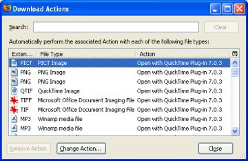
This list contains file types that you have downloaded. You can choose what Firefox should do when clicking on a specific file type. Select the file type you want to modify and click the button.
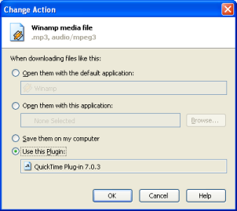This will display the Change Action window, where you can choose to have the file type being opened by an application or saved to disk. For example, if you view lots of media files on Web pages, you might want to specify that it always open it in your media player, instead of asking where you want the file to be saved.
Open them with the Default application:Select this option to open this file type in the default application for that file type (determined by the Operating System).
Open them with this application:Select this option to specify another application that should handle this file type. You will see a dialog asking you to specify the application to use. If not, click the button.
Save them on my computer:This option will save the files to your computer. If you have the Save all files to option selected, the files will be saved automatically.
Use this plugin:This option will make Firefox use a plugin to open the files.
Feeds Options
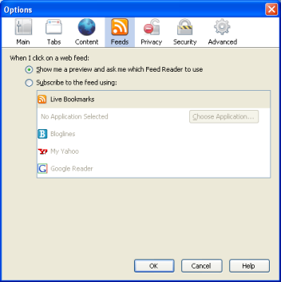Web Feeds are specially formatted documents which summarize the content of web sites. You can view the content of feeds in Firefox, create Live Bookmarks for them, or add them to a feed reader on your computer or on the Web. The options in this pane determine what Firefox does when you view a feed.
When you view a feed within Firefox, you will be shown a preview of its contents. With this option selected, you are always given a choice of what you would like to use to subscribe to the feed at the top of the preview page.
Instead of displaying a preview of the feed when you view one, you can have the feed be opened directly in a feed reader by selecting a reader from the list of available readers. You can choose to use an application on your computer to subscribe to feeds by clicking the button and finding the application on your computer. Alternately, you can choose to automatically subscribe to feeds by saving them as Live Bookmarks. To choose a subscription method, simply select it from the list.
Privacy Options
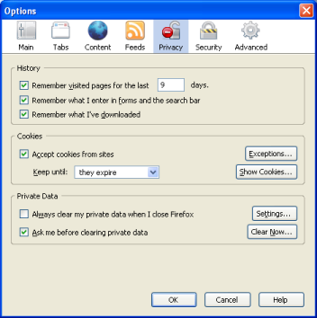The Privacy panel contains options related to your privacy. As you browse the web, information on where you have been, what pages you have visited, etc are stored here.
- History
-
Remember visited pages for the last ... days.
Here you can specify for how many days you want the browser to remember what pages you have visited. The default is 9 days.
Remember what I enter in forms and the search barWhen you enter information in web forms or the search bar, Firefox remembers what you type and automatically makes suggestions when you enter information again. To stop this behavior, uncheck this option.
Remember what I've downloadedThis option controls whether or not past downloads show up in the Downloads window. The Downloads window (accessible from the Tools menu or by pressing Ctrl+J) displays a list of your recent downloads. Downloads options are available in the Main panel.
- Cookies
-
A cookie is a file created by a web site that stores information on your computer, such as your preferences when visiting that site. For example, this site stores the navigation menu behavior (locked or unlocked) in a cookie file.
Accept cookies from sitesBy default, cookies are enabled. Uncheck this option to disable the use of cookies. Note that some sites may not work properly when this feature is disabled.
To display the stored cookies, click . Click the button to allow or deny specific sites to store cookies on your computer, regardless of the global settings.
You have three options of for how long Firefox should store cookies, as explained below:
- until they expire
This is the default option. Cookies will be stored for as long as the site specifies.
- until I close Firefox
This will remove cookies when you close the browser.
- ask me every time
Select this option to gain maximum control of which cookies are allowed to be stored on your computer. A confirmation dialog will be displayed each time a site tries to save a cookie.
- until they expire
- Private Data
-
Always clear my private data when I close Firefox
You can choose to have Firefox clear your private data when you close it. To configure what data is cleared, click the button.
Ask me before clearing private dataWith this option selected, Firefox will ask you before automatically clearing the data specified by clicking .
If you wish to clear your private data right now, you can click the button to do so. To clear your private data from outside the options dialog, either press Ctrl+Shift+Del or select Tools > Clear Private Data....
Security Options
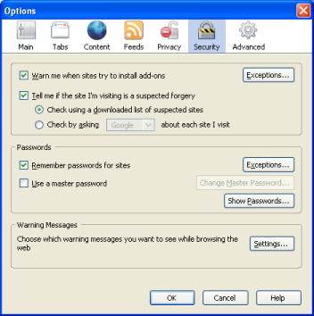By default, Firefox allows some specific web sites to install add-ons for Firefox. To view and edit this list of allowed sites, click . This whitelist mechanism works the same way as the Block Popup Windows feature explained above.
Check this option if you want Firefox to actively check whether the site you are visiting may be an attempt to mislead you into providing personal information (this is often referred to as phishing).
With this option selected, Firefox will check the current site against a frequently updated list stored on your computer. No data about the sites you visit is transferred to third-party anti-phishing providers during normal browsing. Since phishing techniques and sites evolve quickly, this mode of protection may not be as effective as having an anti-phishing provider check every site you visit.
With this option selected, Firefox will send the address of the current page over an encrypted connection to the selected third-party anti-phishing provider in order to verify its identity. This method offers the greatest protection, but information such as your IP address and browser version may be transfered and stored by the selected provider. You will be prompted to review and agree to the selected data provider's privacy policy after selecting this option.
- Passwords
-
Remember passwords for sites
Firefox is capable of securely storing passwords you enter in web forms to make it easier to log on to Web sites. You can manage the saved passwords and delete individual passwords by clicking . To stop saving passwords altogether, uncheck this option.
Even with this option checked, however, you'll still be asked whether to save passwords for a site when you first visit it. If you select , that site will be added to an exceptions list. To access that list or to remove sites from it, click the button.
Use a master passwordFirefox can protect sensitive information such as saved passwords and certificates by encrypting them using a master password. If you create a master password, each time you start Firefox, it will ask you to enter the password the first time it needs to access a certificate or stored password. You can set, change, or remove the master password by by checking or unchecking this option or by clicking the button. If a master password is already set, you will need to enter it in order to change or remove the master password.
- Warning Messages
- Click the button to configure the security warnings
Firefox displays while you browse the web.
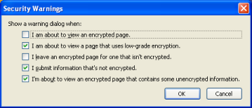I am about to view an encrypted page
When this option is enabled, Firefox will notify you every time you are about to view an encrypted page.
I am about to view a page that uses low-grade encryptionWith this option enabled, Firefox will warn you when you visit a page which uses low-grade encryption.
I leave an encrypted page for one that isn't encryptedWith this option enabled, Firefox will warn you every time you move from an encrypted page to an unencrypted page either by selecting a link on the page, selecting a bookmark or typing a new address into the location bar.
I submit information that's not encryptedWhen this option is enabled, Firefox will warn you when you submit data via a form that's not encrypted.
I'm about to view an encrypted page that contains some unencrypted informationWith this option enabled, Firefox will warn you when the page you're viewing contains a mixture of encrypted and unencrypted content. If an encrypted page contains unencrypted data, you should verify the identity of the page you're viewing prior to entering sensitive data.
Advanced Options
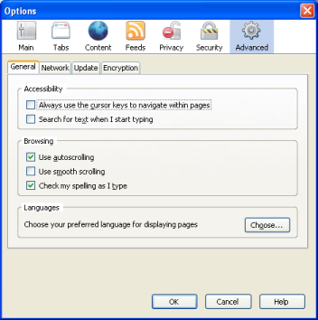- Accessibility
-
Always use the cursor keys to navigate within pages
Specifies whether to move the system caret whenever the focus or selection changes. Some accessibility aids, such as screen readers or screen magnifiers, use the system caret to determine which area of the screen to read or magnify.
Search for text when I start typingFind As You Type is a very useful feature in Firefox. It is a fast way of finding links or text in a Web page without the need of displaying complex search dialogs. Read more about Find As You Type at mozilla.org.
There are more options for Find As You Type covered in the Tips & Tricks page.
- Browsing
-
Use autoscrolling
Autoscrolling is a useful feature which allows you to scroll the page by just holding down the middle mouse button (usually the scroll wheel) and move the mouse up or down. Some people find this annoying so here's the option for it.
Use smooth scrollingSmooth scrolling can be very useful if you read a lot of long pages. Normally, when you press the Page Down key, the view jumps directly down one page. With Smooth Scrolling, it slides down more smoothly, so you are actually able to see how much it scrolls. This makes it easier to resume reading from the point you were before.
Check my spelling as I typeWhen this option is enabled, Firefox will check your spelling and offer possible corrections as you type in web forms. Note that you may need to download a dictionary; to do so, right-click on any text field, enable spellchecking if necessary, and then use the provided Languages menu to download a dictionary.
- Languages
-
Some web pages are offered in more than one language. Click the button to specify your preferred languages.
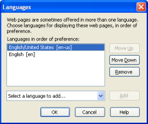- Language selection
-
To add a language, press
Select a language to add...
, choose the language, and click the button. Remove a language by selecting it in the list of active languages and clicking the button.You can reorder languages to determine the preferred one in case a page is provided in two or more of your selected languages. Do this using the and buttons.
- Connection Settings
-
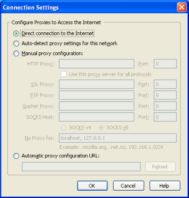
Many organizations block access from the Internet to their networks. This prevents outside parties from gaining access to sensitive information. The protection is called a firewall.
If your organization has a firewall, the browser may need to go through a proxy server before connecting you to the Internet. The proxy server prevents outsiders from breaking into your organization's private network.
- Configure Proxies to Access the Internet
-
Direct connection to the Internet
This is the default option. Choose this if you don't want to use a proxy.
Auto-detect proxy settings for this networkChoose this if you want Firefox to automatically detect the proxy settings for your network.
Manual proxy configurationChoose this if you don't have a proxy location (URL). Ask your system administrator for the names and port numbers of the servers running proxy software for each network service and enter the information in the appropriate fields.
Automatic proxy configuration URL:If there's a proxy configuration file at your workplace, ask the system administrator for its URL and enter it here. Press to load the settings.
- Cache
-
Pages you view are normally stored in a special cache folder for quicker viewing the next time you visit the same page. Here you are able to specify the amount of disk space the cache can use.
In addition to specifying the amount of disk space, you can also specify the cache folder and the memory usage.
Clicking on immediately clears the current contents of the cache, freeing the disk space used by the cache.
- Updates
-
Firefox can check whether a new version of your installed extensions or of Firefox itself is available.
FirefoxBy default, Firefox will periodically check and notify you when a new version is available. Uncheck this option to disable the periodic check.
Installed Add-onsBy default, Firefox will periodically check and notify you when a new version for one of your installed add-ons is available. Uncheck this option to disable the periodic check.
Search EnginesBy default, Firefox will periodically check and notify you when a new version for one of your installed search engines is available. Uncheck this option to disable the periodic check.
- When updates to Firefox are found:
-
Ask me what I want to do
By default, Firefox will periodically check and notify you when a new version is available. Uncheck this option to disable the periodic check.
Automatically download and install the updateBy default, Firefox will periodically check and notify you when a new version for one of your installed add-ons is available. Uncheck this option to disable the periodic check.
Warn me if this will disable any of my add-onsThis option determines whether you will be warned before the installation of an update which would require an incompatible add-on to be disabled because no newer, compatible version exists. The warning will allow you to postpone installation of the update, though at the expense of improvements included in it.
If all extensions and themes are compatible or can be updated to be compatible, the Firefox update will be installed. Upon restart you will be asked to install any needed add-on updates so that you can continue to use them.
Firefox automatically records the updates you have installed. You can view information about these updates by clicking the button.
You must be running Firefox as an administrator or as the user who originally installed Firefox to install Firefox updates.
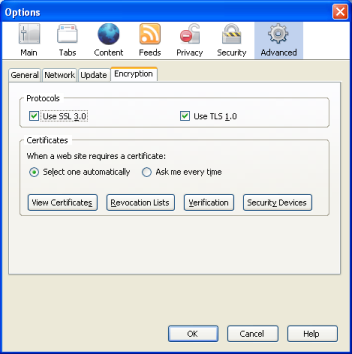- Protocols
-
Use SSL 3.0
Specifies whether you want to send and receive secured information through SSL3 (Secured Sockets Layer Level 3), a protocol that is intended to be more secure than SSL2, standard protocol for communicating securely with web sites. Disabling it will prevent you from visiting some sites.
Use TLS 1.0Specifies whether you want to send and receive secured information through TLS (Transport Layer Security), an open security standard similar to SSL3 (Secure Sockets Layer). Note that some Web sites might not support this protocol.
- Certificates
Certificates help perform encryption and decryption of connections to secure sites.
Select one automaticallyWhen a web site requests a secure connection, Firefox will by default automatically use an appropriate certificate.
Ask Every TimeIf you wish to manually choose a certificate (for example, if you wish to use a certain type of encryption instead of what is automatically selected), select this option and you'll be in complete control of what certificates you use while browsing.
Click the button to view stored certificates, import new certificates, and back up or delete old certificates in Firefox.
Firefox can use Certificate Revocation Lists (also known as CRLs) to ensure that your certificates are always valid. Click the button to manage the CRLs installed on your computer.
Firefox can verify the validity of your certificates using OCSP (Online Certificate Status Protocol) every time they are viewed or used. Firefox does not use OCSP by default, but if you want to enable it, you can click on the button. You will most likely only need to change this if your Internet environment requires it.
Security devices can encrypt and decrypt connections and store certificates and passwords. If you need to use a security device other than the one in Firefox, click the Security Devices button.
© 2002-2006 David Tenser.